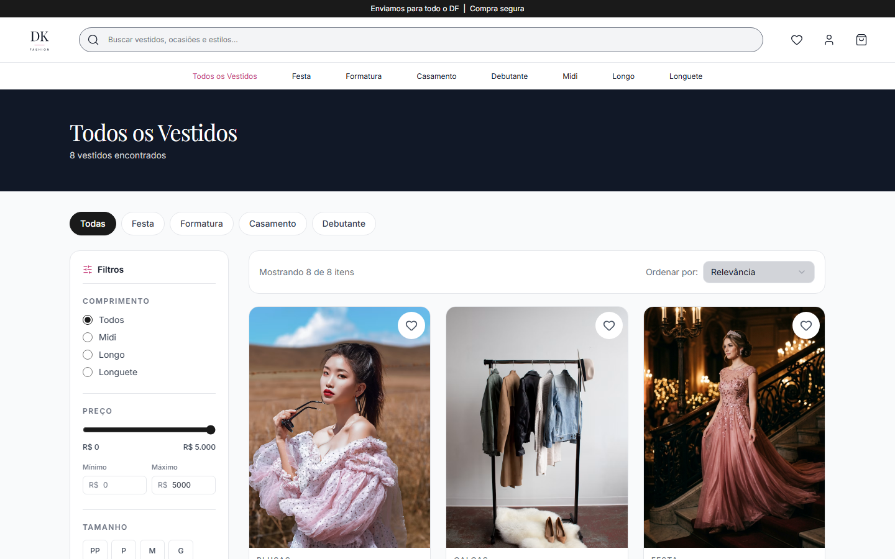
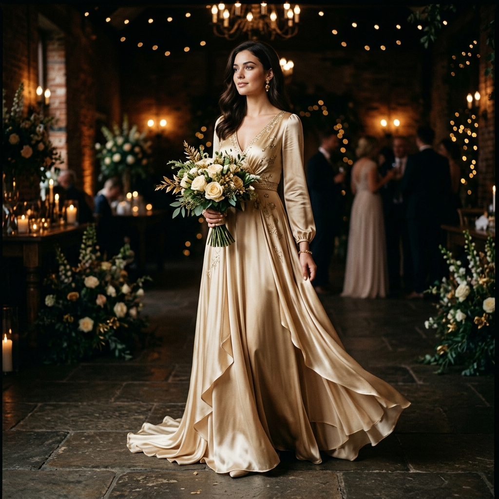

01
Estoque no papel
O saldo de cada peça, cor e tamanho ficava em anotações. Ninguém sabia o que estava disponível sem conferir na arara.
O DK Fashion nasceu para tirar do papel uma loja de moda festa. No caminho, virou um conjunto de módulos (loja online, PDV e gestão) que funcionam juntos ou separados e podem atender outros negócios.
A cliente já operava uma loja física de vestidos de festa, debutante, formatura e casamento. O que faltava era tecnologia que acompanhasse a rotina dela sem substituir o que já funcionava.
O saldo de cada peça, cor e tamanho ficava em anotações. Ninguém sabia o que estava disponível sem conferir na arara.
A venda no balcão e o atendimento pelo WhatsApp não conversavam entre si, e uma peça podia ser prometida duas vezes.
Comissões, metas, cupons e clientes eram calculados à mão. Faltavam números para decidir.
Cada parte do sistema resolve um problema que qualquer varejista tem. A loja real serviu de laboratório: requisitos levantados com a dona, validação em uso e evolução contínua ao longo de duas disciplinas.
Loja online, PDV e gestão compartilham uma API única, mas cada um pode ser oferecido sozinho.
Histórias de usuário e regras de negócio saíram de reuniões com quem vivia o problema.
Testes automatizados, análise contínua de qualidade, deploy automatizado e cuidados de segurança e LGPD.
Na DK Fashion eles rodam juntos. Para outra loja, dá para começar por um deles e somar os demais depois.
Vitrine por ocasião, filtros por tamanho, cor e preço, detalhes completos, favoritos, carrinho e avaliações com compra verificada.
Ver módulo 02Pix, crédito em até 12x e débito por um gateway plugável, cálculo de frete, retirada na loja e rastreio do pedido.
Ver módulo 03Ponto de venda para a loja física, ligado ao mesmo estoque do site. A venda presencial já registra o vendedor e baixa o saldo na hora.
Ver módulo 04Painel com indicadores, produtos, estoque com histórico auditável, pedidos, funcionários, banners e relatórios, com acesso por perfil.
Ver módulo 05Cadastro de clientes, exportação da base para tráfego pago, cupons de desconto, cupons de parceiros e crédito de troca.
Ver módulo 06Comissão calculada automaticamente, metas mensais, ranking de vendedores e barras de progresso que mantêm o time engajado.
Ver móduloMétricas extraídas do SonarCloud e dos repositórios do projeto. Os detalhes estão na página de engenharia.
A loja online foi desenhada no Figma pelo time de design e implementada sobre um design system próprio, com versões para desktop e celular.


CasamentoO domínio é moda festa, mas o modelo de dados de produto, variação, estoque e pedido serve a qualquer varejo que vende por cor, tamanho ou modelo.
Começam pela loja online e pelo PDV, sem duplicar estoque nem cadastro de clientes.
Adotam só o módulo de gestão e o PDV para sair do caderno, com histórico de cada alteração.
Usam metas, ranking e comissão automática para dar transparência e motivar o time.
Navegue pela loja publicada, leia o código ou siga a documentação técnica e de processo.